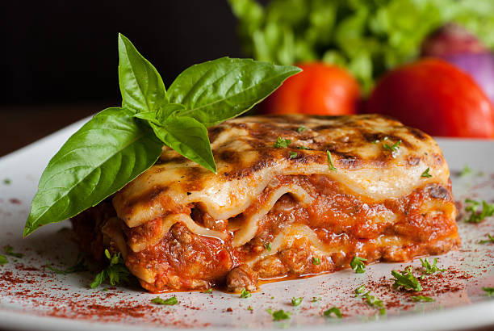

Lasagna

Description
Lasagna, also known as lasagne, is a type of pasta, possibly one of the oldest types,[2] made of very wide, flat sheets.
Either term can also refer to an Italian dish made of stacked layers of lasagna alternating with fillings such as ragù (ground meats and tomato sauce), béchamel sauce, vegetables, cheeses (which may include ricotta, mozzarella, and Parmesan), and seasonings and spices.[3] The dish may be topped with grated cheese, which becomes melted during baking.
Typically cooked pasta is assembled with the other ingredients and then baked in an oven. The resulting baked pasta is cut into single-serving square or rectangular portions.
Ingredients
- beef - 1/2 ground
- sausage - 1/2 ground
- lasagna noodles
- spaghetti sauce
- ricotta cheese
- mozzarella shredded
- parmesan cheese shredded or gratted
- egg - 1
- onion diced - 1/2
- minced garlic - 2 tbsp
- other seasonings of your choice like Italian seasoning and/or pepper can be used as well
Steps
- Heat water to boil noodles in a large pot (skip for no boil noodles).
- Chop onions and mince garlic, set aside. In a large frying pan, cook ground beef and pork sausage together with chopped onions and minced garlic, at med-high heat, until fully cooked.
- Meanwhile, blend together ricotta cheese and egg in a small bowl. Drain excess grease from cooked ground beef and pork sausage mixture.
- Add spaghetti sauce to meat, stir to combine. Cook on low, covered, until hot. Turn off and set aside.
- Boil noodles according to instructions until just slightly al dente. Drain, and assemble quickly.
- To assemble lasagna: Top a small amount of the meat mixture into the bottom of the 9×13” pan. Top with 4 lasagna noodles along the length of the pan.
- Spread ricotta cheese along noodles (this will be repeated so try to divide it between 5 or 6 layers. Spread meat mixture onto ricotta cheese (repeated between 5 or 6 layers so divide out).
- Top with mozzarella cheese, approximately 1/3 cup. Repeat with a layer of lasagna noodles, ricotta cheese, meat mixture, mozzarella cheese until you get to the top layer. Bake at 350° for 40 minutes or until warm in center and cheese is melted.